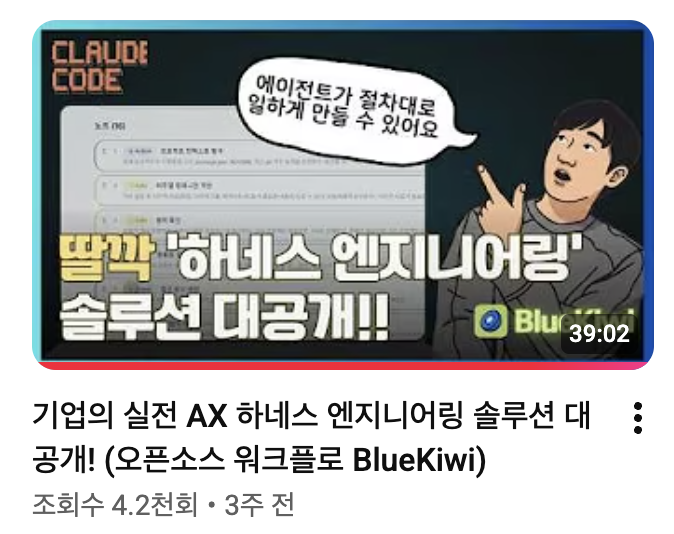

BlueKiwi — Claude Code에 워크플로를 이식한 오픈소스 AX 솔루션
"왜 같은 도구를 쓰는데 어제와 오늘, A와 B의 결과가 다른가?" — 단테랩스가 AX 컨설팅 현장에서 만난 그 질문은, 결국 '워크플로의 자산화'라는 본질로 수렴했다. BlueKiwi는 그 답으로 만들어진 오픈소스 하네스 엔진이다.

Abstract
BlueKiwi는 Claude Code, Codex와 같은 자율 에이전트 위에 n8n 스타일의 워크플로 레일을 깔아주는 오픈소스 하네스 엔진이다. '결정론적 노드'와 '자율 에이전트' 사이의 빈 공간을 '고속도로'로 채워, 같은 업무가 같은 품질로 반복될 수 있는 팀 단위 워크플로 자산화를 목표로 한다. 핵심은 액션·게이트·루프 3종 노드, 그리고 워크플로 설계 자체를 바이브 코딩으로 끝내는 BK design 명령이다.
Key Findings
본질 문제 = 자산화 실패
AI 도구는 다운로드시킬 수 있어도, 팀의 노하우는 '개인기'에 머문다. 사람이 바뀌면 품질도 함께 사라진다.
Skills만으로는 부족하다
그라운드 룰은 잡아주지만, 매 실행마다 같은 결과를 보장하지 못한다. 절차의 일관성은 별도의 레이어가 필요하다.
n8n 노드 안에 가두면 자율성 사망
결정론적 노드의 틀에 에이전트를 욱여넣는 순간, 판단력이 사라진다. 단계만 지정하고 내부는 풀어줘야 한다.
해법 = 하네스(Harness)
단계별 지침은 주되 각 단계 안에서는 자율성을 부여. BlueKiwi는 이 사상을 노드 3종(액션·게이트·루프)으로 구현한다.
왜 만들어졌나 — 컨설팅 현장의 페인 포인트
기업 AX 컨설팅을 다녀보면 같은 광경이 반복된다. Claude Code도 깔아주고, Codex도 셋업해주고, 사내 가이드도 배포한다. 그런데 한 달 뒤 다시 가보면 결과는 제각각이다. 같은 업무인데도 어제와 오늘이 다르고, A가 쓸 때와 B가 쓸 때가 다르다.
단테는 이 현상을 한 문장으로 진단한다 — "워크플로가 자산화가 안 된다." 도구는 도입했지만, 도구를 다루는 절차는 개인의 머릿속에만 있다. 그래서 사람이 바뀌면 노하우도 함께 사라진다. AX의 본질은 도구 도입이 아니라, 팀 단위로 내제화된 워크플로를 만드는 일이다.
"워크플로가 자산화가 안 되니까 사람이 바뀌면 품질도 같이 바뀐다. A가 하면 잘 되는데, B가 하면 결과가 달라진다."
— 단테, BlueKiwi 발표 중
기존 시도의 한계
| 도구 | 강점 | 한계 |
|---|---|---|
| Claude Code Skills | 일관된 그라운드 룰 설정, 결과를 어느 정도 통제 가능 | 매 실행마다 같은 결과를 보장하지는 못한다 |
| n8n 같은 노코드 | 시각적, 비개발자 친화, 결정론적 재현성 | 노드 틀에 가두면 에이전트의 자율적 판단력이 사라진다 |
둘은 양 극단이다. 한쪽은 자유롭지만 일관성이 없고, 다른 쪽은 일관되지만 자유가 없다. 단테가 제안하는 해법은 그 사이의 길 — "단계별 지침은 주되, 각 단계 안에서는 자율성을 부여한다." 그는 이를 하네스(Harness)라고 부른다.
지하철 vs 오프로드 지프 vs 고속도로
이 발표에서 가장 잘 박히는 비유는 교통수단 셋이다. 같은 '이동'이지만 자유도와 일관성의 균형이 다르다.
n8n
레일을 절대 벗어나지 않는다. 그러나 자유도는 0. 정해진 역만 다닐 수 있다.
Claude Code 단독
어디든 갈 수 있다. 그러나 목적지에 못 닿을 수도 있고, 매번 다른 길로 간다.
BlueKiwi
포장도로 위를 자율 에이전트가 달린다. 일관성 + 퍼포먼스를 동시에 확보.
"에이전트에게 단계별로 어떤 지침서를 주되, 그 각 단계 안에서는 자율성을 부여해주는 것 — 그것을 다른 말로 하네스라고 부른다."
BlueKiwi 아키텍처
노드 3종 — 에이전트에게 주는 '지침의 단위'
여기서 결정적인 재정의가 일어난다. n8n의 노드는 '코드를 실행하는 단위'지만, BlueKiwi의 노드는 '에이전트에게 하나의 지침을 하달하는 단계'다. 같은 단어, 다른 개념이다.
| 노드 타입 | 역할 | 비유 |
|---|---|---|
| 액션(Action) | 사람 개입 없이 자동 실행 | n8n의 일반 노드와 유사 |
| 게이트(Gate) | 사람이 확인·선택·의사 결정 (HITL) | 1문 1답 분기 |
| 루프(Loop) | 조건이 충족될 때까지 질문·답변 반복 | 소크라테스식 명확화 질문 |
주목할 점은 사람 개입을 두 형태로 분리한 설계다 — "이미 선택지가 있는 결정"은 게이트로, "아직 모호해서 정답을 만들어가야 하는 상황"은 루프로. 워크플로 안에 HITL과 명확화 질문이 각각 자기 자리를 가진다.
웹 UI 구성
| BlueKiwi 항목 | n8n 대응 | 비고 |
|---|---|---|
| Workflows | Workflows | 워크플로 관리 |
| Tasks | Executions | 실행 이력 |
| Credentials | Credentials | 인증 정보 |
| Instructions(지침) | — | 노드와 같은 개념, Skill에 가까운 재사용 단위 |
지침을 별도 항목으로 둔 것이 핵심이다. 한 번 잘 다듬은 지침은 다른 워크플로의 노드로 가져다 쓸 수 있다. Skill ↔ 노드의 양방향 호환성이 라이브러리화의 기반이 된다.
실행 모델
bluekiwi start로 띄우면 localhost:3102에서 동작.개인용 — SQLite 내장, Docker 불필요
팀용 — Docker 기반 셀프 호스팅
호환성 — Claude Code / Codex / Cursor / Antigravity 등 Skill + MCP를 지원하는 도구라면 모두 연동 가능
설치 — API 키 발급 → 인라인 명령 1줄 → MCP·Skill 자동 설치
데모 — YouTube → Threads 자동 포스팅
라이브 시연된 전체 파이프라인은 다음과 같다. 단계마다 노드 타입(액션·게이트)이 자연스럽게 끼어드는 점에 주목하자.
BK design슬래시 명령으로 워크플로 디자인 시작. 요구사항은 Typeless 음성 전사로 입력.- YouTube URL 입력 → 자막 추출 → 핵심 인사이트 3개 추출 → 쓰레드 초안 + 해시태그 생성.
- 비주얼 셀렉션 게이트에서 목업이 렌더링되어 사용자가 검토 → 승인 → 발행.
- 워크플로 자동 생성 시점에 노드 타입(액션/게이트)을 사용자가 선택.
BK start한 마디로 실행. 가장 적합한 워크플로를 시스템이 자동 추천.- 워크플로 종료 시 단계별 코멘트로 개선 사항을 DB에 기록 →
BK improve로 자동 개선.
"순수 Claude Code만으로 같은 작업을 하면 시행착오가 많고 정립까지 오래 걸리지만, BlueKiwi를 쓰면 헤매지 않고 절차대로 간다 — 업무 효율이 극단적으로 개선된다."
곁들임 — Typeless라는 동반 도구
발표 중 단테가 강력 추천한 보조 도구. 워크플로 설계 단계의 음성 입력에 쓴다.
- 음성을 텍스트로 전사하되 머뭇거림·중복·외래어 혼용을 자동 정제
- 한국어 STT 품질 우수, 사전 기능으로 전문 용어 정확 전사
- 무료 (주당 8,000 단어), 모바일·카카오톡에서도 활용 가능
바이브 코딩 초기 브레인스토밍 단계에서 강력 추천된다. BK design + Typeless 조합은 워크플로 설계의 모호함을 가장 빠르게 정리하는 루틴이다.
핵심 명제 10가지
Key Takeaways
- AX의 본질은 도구 도입이 아니라 워크플로의 자산화와 팀 단위 내제화다.
- 결정론 시스템에는 하네스가 필요 없다 — 자율 에이전트가 있을 때만 필요하다.
- 하네스 = 자율성을 살리면서 목표 궤도로 끌어오는 가드레일.
- Skills는 그라운드 룰까지, 워크플로는 단계별 절차까지 보장한다.
- n8n의 노드 ≠ BlueKiwi의 노드. 후자는 "에이전트 지침 단위"로 재정의된다.
- HITL은 게이트, 명확화는 루프 — 사람 개입을 두 형태로 분리한다.
- 워크플로 설계 자체를 바이브 코딩으로 끝낸다 → 학습 곡선 제거.
- 비주얼 셀렉션 게이트로 UI 검토 단계를 워크플로에 자연스럽게 삽입.
- 워크플로 1.0은 완성품이 아니다 — 코멘트 → improve 루프로 진화.
- 팀 공유 워크플로 라이브러리(bluekiwi.work)가 조직 자산화의 핵심.
의미와 시사점
AX = 도구 도입이 아니라 워크플로 내제화. 결국 "팀 단위 하네스"를 어떻게 만드는가가 AX 성공의 핵심 변수가 된다. 도구를 배포한 뒤에야 진짜 일이 시작된다는 뜻이기도 하다.
BlueKiwi는 단독 제품이라기보다, 에이전트 + 결정론적 워크플로의 결합이라는 하네스 엔지니어링 사조의 한 구현으로 보인다. Hermes, Superpowers, OpenClaw와 같은 계열의 진화 방향과 같은 좌표계 위에 있다.
한국형 AX 컨설팅 현장의 페인 포인트가 그대로 제품 설계에 녹아 있어, 사내 AI 코칭·교육 커리큘럼에 즉시 응용 가능한 도구라는 점도 주목할 만하다.
인용
"n8n을 쓰면 지하철을 타는 것과 같다. 자유도가 없지만 레일을 벗어나지 않는다. Claude Code는 오프로드 지프 — 어디든 갈 수 있지만 목적지에 못 닿으면 의미가 없다. BlueKiwi는 그 사이에 고속도로를 내준다."
"n8n의 노드는 코드를 실행하는 노드이지만, BlueKiwi의 노드는 에이전트에게 하나의 지침을 하달하는 단계다."
"AX가 다른 게 없다. 팀 단위로 하네싱이 될 수 있도록 해주면 된다. 지식 내제화를 도와줄 수 있는 AI 사용법, 그게 핵심이다."
출처 노트 (References)
사람·조직
- 단테(단테랩스)
- Dante's Datalab (YouTube 채널)
도구
- BlueKiwi, n8n
- Claude Code, Codex, Cursor, Antigravity
- Typeless (음성 전사)
컨셉
- 하네스 엔지니어링
- Node-based Workflow
- Human-in-the-loop (HITL)
- 워크플로 자산화, AX, 바이브 코딩
사이트
- bluekiwi.work — 워크플로 공유 커뮤니티
- 원본 영상 (39분)
바로 적용하기 — 실행 권고
- 반복 패턴 업무부터 BlueKiwi 워크플로로 옮겨본다.
- 단계별 코멘트 →
BK improve루프를 3회만 돌려도 완성도 높은 워크플로가 만들어진다 (발표자 경험). - 워크플로 설계 단계에서 음성 입력(Typeless) +
BK design조합으로 초기 모호함을 빠르게 정리한다. - 팀 적용 시: 설정 → 팀 관리 → 팀원 초대(이메일) 흐름으로 같은 워크플로를 공유.
- 본인 워크플로를 bluekiwi.work에 publish하여 커뮤니티 학습 자산으로 환원.
운영 적용 메모
DAP 관점
- 운영요청·장애 대응 같은 반복 패턴 업무에 액션 + 게이트 조합으로 표준 절차 자산화
- Claude Code 기반 운영 보조 흐름 구축에 직접 활용 가능
교육 관점
- AX 전임 교수 커리큘럼의 "하네스 엔지니어링" 모듈 데모 도구 후보
- n8n(결정론) → Claude Code(자율) → BlueKiwi(혼합) 3단 비교 슬라이드로 구성
연관 작업
- jyp-garden의
/ingest,/blog-write스킬이 같은 사상의 워크플로 자산화 시도 - BlueKiwi 노드 모델과의 비교 분석이 본인 하네스 정교화에 직접 기여
— llm-wiki vault · 2026-05-14